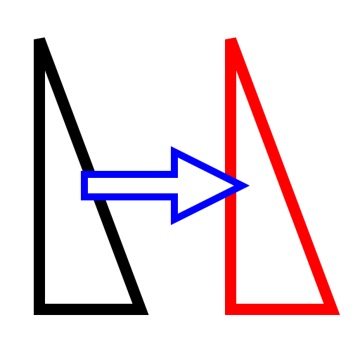

Verschieben / Kopieren
Werkzeugleiste / Symbol:


Menü: Modifizieren - Verschieben / Kopieren
Tastenkürzel: M, V
Kommandos: move | mv
Beschreibung:
Verschiebt oder kopiert Objekte.
Vorgehensweise:
- Selektieren Sie die Objekte, die verschoben oder kopiert werden
sollen.
- Starten Sie dieses Werkzeug.
- Bestimmen Sie den Bezugspunkt mit der Maus oder indem Sie eine Koordinate
in die Kommandozeile eingeben.
- Bestimmen Sie den Zielpunkt. Um die ausgewählten Objekte um 50 Einheiten
nach rechts zu verschieben, geben Sie die relative Koordinate
@50,0in der Kommandozeile ein.
- Der Dialog mit den Optionen zum Verschieben / Kopieren von Objekten wird
angezeigt.
Um die selektierten Objekte zu verschieben ohne die originalen Objekte
beizubehalten, aktivieren Sie "Original löschen", um sie zu kopieren
"Original beibehalten". Ausserdem können Sie mehrere Kopien auf einmal
erstellen indem Sie "Mehrere Kopien" wählen und die Anzahl Kopien im Textfeld
darunter eingeben.
Die neuen Objekte werden auf denselben Layer plaziert wie die Originale
und haben auch dieselben Attribute. Um stattdessen den aktuellen Layer und
die aktuellen Attribute zu verwenden, aktivieren Sie die Option "Aktueller
Layer / Attribute".
- Klicken Sie "OK" um die Objekte zu verschieben / kopieren.